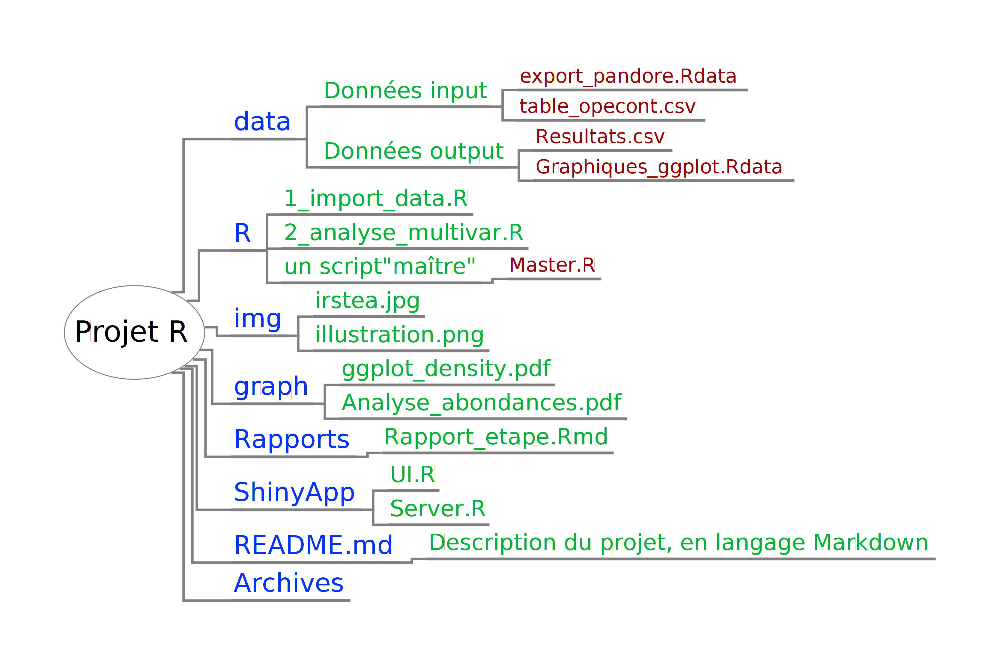

Travailler autant que possible avec les projets Rstudio, cela permet de se passer du setwd() en début de script.
Architecture classique : data (avec données d’input/output), R (contient les scripts), img pour les images diverses, graph pour les sorties graphiques.
Eventuellement : Archives, README.md, Rapports (avec des .Rmd), ShinyApp
Nommage des scripts : compartimentés par opération et numérotés : “1_import_data”,“2_analyse_multivar”…
Un script “master” pour “sourcer” tous les autres scripts d’un coup.
Le dossier de projet est géré en Git, du coup le README sera inteprété sous Github

IDE possibles
Rstudio : L’IDE le plus abouti pour faire de la bonne data science avec R
Eclipse
Atom.io : éditeur multi-langage open source issu des équipes derrière Github.
Version tracking et compréhension
Github
Un cachier de labo au format .rmd peut aussi être intéréssant.
Recherche d’une chaîne de charactère dans tous les scripts